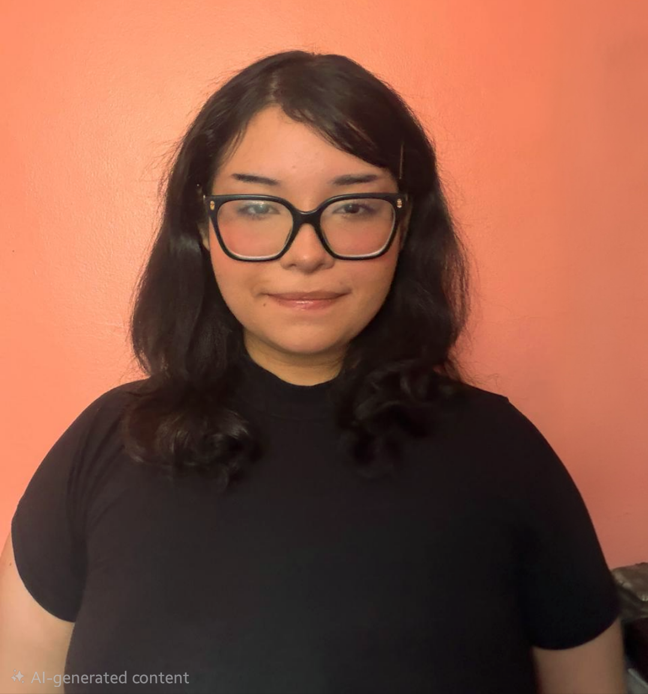

Estudiante de último año de Diseño Gráfico con interés en el diseño publicitario, diseño web, identidad visual y la ilustración. Me apasiona crear soluciones visuales funcionales y atractivas, prestando especial atención a la tipografía y la experiencia del usuario. Busco desarrollar mis habilidades en un entorno creativo donde pueda seguir aprendiendo y aportar nuevas ideas.
2021 – Presente

Infografía: Beneficios del Tamarindo — Proyecto Académico
Diseño de una pieza editorial de gran formato, aplicando jerarquía tipográfica y diagramación limpia para facilitar la lectura de datos nutricionales. Conceptualización y diagramación de una pieza gráfica informativa, estructurando datos complejos sobre salud y nutrición en un formato visualmente digerible.

Publicidad Exterior: Banner Móvil para "Classy Tots" — Proyecto Independiente / Práctica de Branding
Diseño y diagramación de un banner publicitario de gran formato para transporte urbano, adaptando la identidad visual de una tienda de ropa infantil real.


Diseño de Empaque y Branding: "Tiki Uva" — Proyecto Final de Adobe Illustrator
Creación del diseño gráfico para la etiqueta de un jugo infantil, adaptándolo directamente sobre una plantilla de empaque y presentando el resultado final en un mockup.